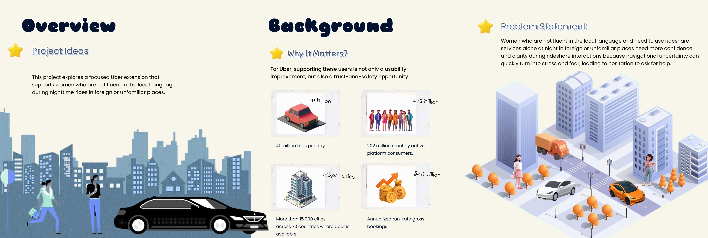
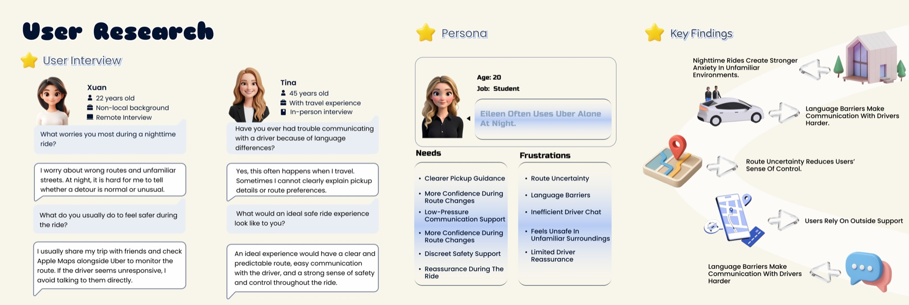
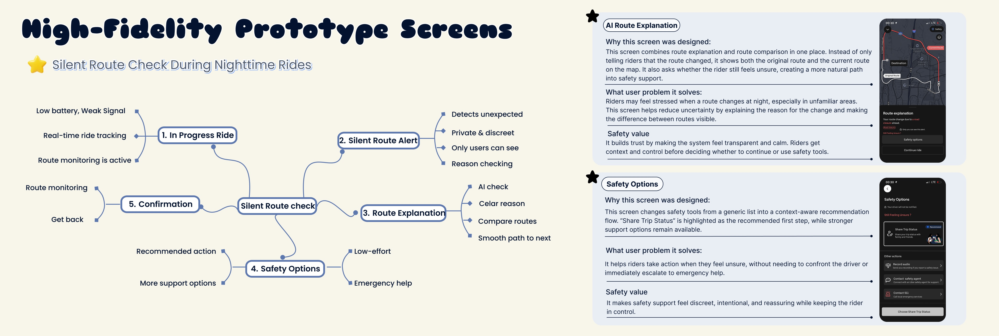
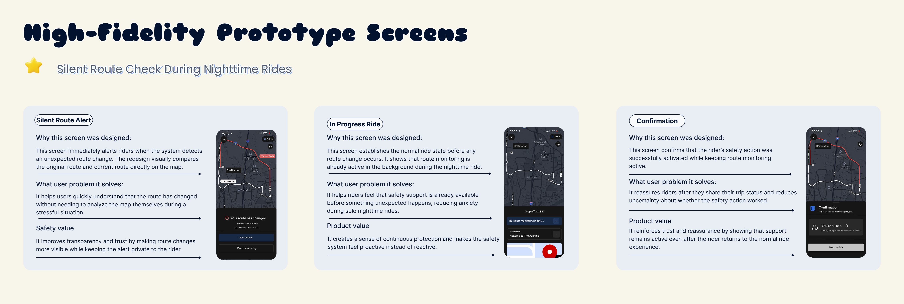
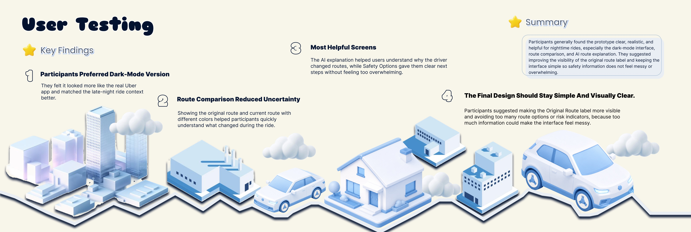
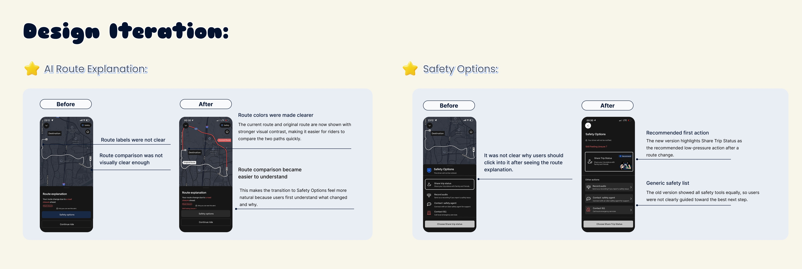

Case Study · Rideshare Safety
Night Ride
Confidence
A focused Uber extension for women who are not fluent in the local language and need to use rideshare services alone at night in foreign or unfamiliar places. The concept addresses route uncertainty, language barriers, low-pressure driver communication, and reassurance during the ride.
Overview, Background, and Problem Statement

User Research, Persona, and Key Findings

High-Fidelity Prototype Flow and Screen Rationale

High-Fidelity Prototype Screen Details

User Testing Findings and Summary

Design Iteration and Before-After Comparison
